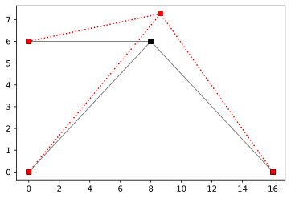

The Force Method
import ema as em
import matplotlib.pyplot as plt
import numpy as np
import sympy as sp
%config InlineBackend.figure_format = 'svg'
dm = em.Model(2,2) # create instance of model object
n = dm.dnodes
e = dm.delems
A1 = 10000
Ac = 20000
I = 1
dm.xsection('default', A1, I)
csec = dm.xsection('section-c', Ac, I)
n1 = dm.node('1', 0.0, 0.0)
n2 = dm.node('2', 16., 0.0)
n3 = dm.node('3', 8.0, 6.0)
n4 = dm.node('4', 0.0, 6.0)
a = dm.truss('a', n3, n4) # add truss element to model object
b = dm.truss('b', n1, n3)
c = dm.truss('c', n2, n3, xsec=csec)
dm.pin(n1)
dm.pin(n4)
dm.pin(n2)
dm.numDOF();
prim = em.Model(2,2) # create instance of model object
np = prim.dnodes
ep = prim.delems
A1 = 10000
Ac = 20000
I = 1
prim.xsection('default', A1, I)
csec = prim.xsection('section-c', Ac, I)
prim.node('1', 0.0, 0.0)
prim.node('2', 16., 0.0)
prim.node('3', 8.0, 6.0)
prim.node('4', 0.0, 6.0)
prim.truss('a', np['3'], np['4']) # add truss element to model object
prim.truss('c', np['2'], np['3'], xsec=csec)
prim.pin(np['1'])
prim.pin(np['4'])
prim.pin(np['2'])
prim.numDOF(); # Automatically number model dofs
# Establish redundant member force
dm.redundant(b, '1')
fig, ax = plt.subplots()
em.plot_structure(dm, ax)
Part 1 : Nodal Loading
np['3'].p['y'] = 30
np['3'].p['x'] = 50
Up = em.analysis.SolveDispl(prim)
A.f@Up
|
$V_{{fffff}}$ |
| $a_1$ |
0.0720 |
| $b_1$ |
0.1402 |
| $c_1$ |
0.0250 |
\(U_x\)
b.q0['1'] = 1
np['3'].p['y'] = 0.6
np['3'].p['x'] = 0.8
Ux = em.analysis.SolveDispl(prim)
V0 = em.V0_vector(dm)
em.plot_U(dm, Ux, ax, scale=500)
Ux
[0.0, 0.0]
[0.0, 0.0]
[0.00128, 0.0025399999999999997]
[0.0, 0.0]
|
$U_{{fffffffffffffffff}}$ |
| $1$ |
0.00128 |
| $2$ |
0.00254 |
svg
super
C:\Users\claud\Anaconda3\lib\site-packages\IPython\core\formatters.py:371: FormatterWarning: text/html formatter returned invalid type <class 'ema.matvecs.Deformation_vector'> (expected <class 'str'>) for object: Deformation_vector([0.00128 , 0.003548, 0.0005 ])
FormatterWarning
Deformation_vector([0.00128 , 0.003548, 0.0005 ])
# Define nodal loading
b.q0['1'] = 0
n['3'].p['y'] = 30
n['3'].p['x'] = 50
UP = em.analysis.SolveDispl(dm)
UP
|
$U_{{fffffffff}}$ |
| $1$ |
0.021421 |
| $2$ |
0.037298 |
|
$V_{{fffffffff}}$ |
| $a_1$ |
0.021421 |
| $b_1$ |
0.039515 |
| $c_1$ |
0.005242 |